珍寺大道場 北関東編
茨城県
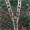＃413 犬卒塔婆
路傍にあるブラックマジックっぽい呪物に込められた祈りと願い
＃362 大杉神社
腰を抜かしそうになるド派手な神社にて見つけた噴飯モノのエピソード
＃282 ナーバ流し
田んぼの真ん中で繰り広げられるおおらか過ぎる祭り！
＃280 一乗院
日本一の巨大毘沙門天すらかすんでしまう、強烈インパクトの寺！
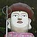＃239 大子地蔵尊
かなり面白い御顔の大コンクリ地蔵の建立目的とは？
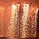＃198 葛城流からくり綱火
夜空に浮かび上がるからくり人形と花火の共演！
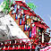＃167 日立風流物
キングオブ屋台の超絶の仕掛けの数々にひっくり返る！
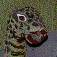
＃057 慈母観音
無人の門前市とニュータウン寺院
＃048 さざえ堂；その2
まだまだありました。さざえ堂、日本は広い！
＃002 牛久大仏
ひたすらデカイ大仏の胎内に隠された異空間とは
栃木県
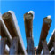＃393 日限冨士浅間神社
何だかヒョロヒョロの虚弱鳥居が並ぶ神社。
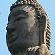
＃327 アウカナ佛
スリランカでもっとも有名な大仏さんが何と日本に！しかも栃木に！
＃292 仁王尊プラザ
温泉にあるコンクリ仁王像の”隠された秘密”
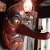
＃249 北温泉
温泉と信仰の関係やいかに！
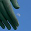
＃248 みろく大観音
20世紀最後の大観音！？
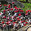＃247 殺生石
妖煙漂う伝説の地に群生する赤い花畑の正体とは！
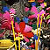＃127 岩舟山
日本三大地蔵のひとつ。すっごく濃密な霊場。
＃062 大前神社
だらしなくデカいえべっさん
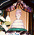
＃006 磯山弁財天
山中の弁天堂にあったいい顔の神様
群馬県
＃341 昆虫千手観音
ピッカピカのバロック仏像は現代の玉虫厨子たりえるのか？
＃332 小泉稲荷神社
鳥居尽くしのお稲荷さんにロシアアバンギャルドを見る
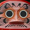＃315 達磨寺
ダルマづくしのお寺に住んでいた意外な人物
＃106-B 迦葉山弥勒寺〜大開帳編〜
行くぜ！ピリオドの向こうへ！
＃106 迦葉山弥勒寺
天狗の寺の堂内にブラックホールが・・・
＃103 水上寺
思い切りのよい塗りっぷりと変な顔の仏像
＃102 釈迦の霊泉
究極の健康ドリンクと謎の仏舎利塔！効果すごいぞお〜
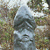＃079 赤城寺
問答無用！謎が謎を呼ぶ寺
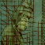＃068 白衣大観音
大観音ファミリーの祖。リスペクト！
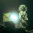＃067 洞窟観音
オヤジの執念と妄想がつくりあげた地底の小宇宙！
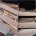
＃003 さざえ堂
百観音一気拝み装置の正体はまさに驚きの異空間
埼玉県
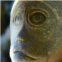＃364 三ツ木神社
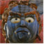＃410 開運不動尊
滝の上に仁王立ちならぬ不動立ち！素敵すぎる不動明王！
無数のお猿さん大モッシュ状態の神社！
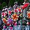＃342 地蔵寺
水子供養が生みだした驚愕の光景！
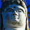＃323 大淵寺護国観音
戦前のコンクリ大観音にちらつくアノ人の影…
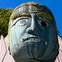＃322 空滝大不動尊
異形の不動明王と某ヒーローの奇妙な符合
＃293 南和寺
倉庫っぽい建物に込められた熱い思い！
＃263 脚折雨乞
巨大な怪獣が町をジャックする日
住職手作りのミニ八十八ヵ所、あなどるなかれ！
＃095 珍寺的秩父札所巡り
秩父にも栄螺堂があった
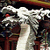＃092 山口観音
龍に囲まれた水子地蔵群、五重の万躰観音堂、ビルマ仏・・・
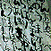＃078 岩槻大師
地下仏殿に封じ込められた濃ゆ〜いオーラ、えぐり込むように！拝むべし！拝むべし！拝むべし！
＃045 聖天宮
何故こんなところに。田んぼの真ん中に建つ道教寺院。
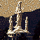
＃026 鳥居観音
山のてっぺんに嫌でも見える大観音の正体や如何に！
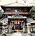
＃003 さざえ堂
百観音一気拝み装置の正体はまさに驚きの異空間
珍寺大道場 HOME